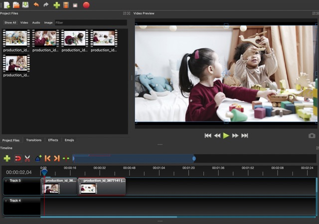
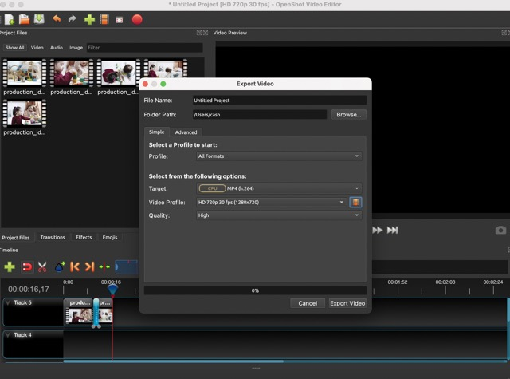

For my review, I analysed one of the websites listed on Awwwards website : Arras ballet, created by Zeitler Design.
As you can see, the website used a lot of videos. I really liked the way the video embedding started automatically. They seem to be used here to give more rhythm to the website but also to highlight the product on offer: classical dance lessons. Another advantage is that videos do not detract from the quality of the website.
For my website, I need to use video to show some advertising. As there aren't enough ads in image format, I feel it's important to use the different types of documents available to me, including videos. I found 2 websites with a lot of video about my subject : children advertisings
For this types of videos, I need to be careful about the copyright policy.
I also think that using a video of children who play or a video who illustrate toys on my home page and my explication page can give my site more dynamism. If I use video to hilight my subject and create more dynamism, I also need to be careful to use video who looks inclusive and not sexist. The aim is to use its videos to showcase ideas of inclusivity and genderless education.
I used the websites cited in the Moodle and make this following researchs : "Children playing" and I founded 2 videos :
I used the software provided in the moodle to edit my videos. It was a bit confusing because I'm used to doing video editing with the lumafusion application, but the interface remains quite similar and intuitive.
Here is the video in low quality without the modifications. I coupled 2 other videos found on the site Pexels.
Here is the video in the 3 qualities requested. I increased the speed 2 times on the first and 4 times on the second. I also added a transition between the 2 videos.
| Low quality | Medium quality | High quality |
|---|---|---|